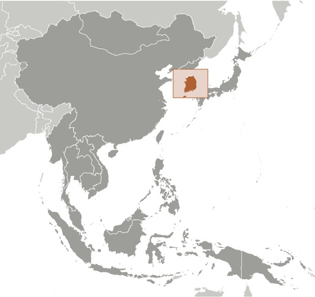
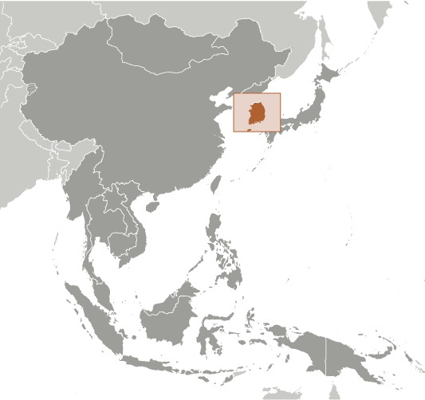

-
Introduction :: Korea, South
-
Background:
An independent kingdom for much of its long history, Korea was occupied by Japan beginning in 1905 following the Russo-Japanese War. In 1910, Tokyo formally annexed the entire Peninsula. Korea regained its independence following Japan's surrender to the US in 1945. After World War II, a democratic government (Republic of Korea, ROK) was set up in the southern half of the Korean Peninsula while a communist-style government was installed in the north (Democratic People's Republic of Korea, DPRK). During the Korean War (1950-53), US troops and UN forces fought alongside ROK soldiers to defend South Korea from a DPRK invasion supported by communist China and the Soviet Union. A 1953 armistice split the Peninsula along a demilitarized zone at about the 38th parallel. PARK Chung-hee took over leadership of the country in a 1961 coup. During his regime, from 1961 to 1979, South Korea achieved rapid economic growth, with per capita income rising to roughly 17 times the level of North Korea in 1979.
South Korea held its first free presidential election under a revised democratic constitution in 1987, with former ROK Army general ROH Tae-woo winning a close race. In 1993, KIM Young-sam (1993-98) became the first civilian president of South Korea's new democratic era. President KIM Dae-jung (1998-2003) won the Nobel Peace Prize in 2000 for his contributions to South Korean democracy and his "Sunshine" policy of engagement with North Korea. President PARK Geun-hye, daughter of former ROK President PARK Chung-hee, took office in February 2013 as South Korea's first female leader. In December 2016, the National Assembly passed an impeachment motion against President PARK over her alleged involvement in a corruption and influence-peddling scandal, immediately suspending her presidential authorities. The impeachment was upheld in March 2017, triggering an early presidential election in May 2017 won by MOON Jae-in. South Korea hosted the Winter Olympic and Paralympic Games in February 2018, in which North Korea also participated. Discord with North Korea has permeated inter-Korean relations for much of the past decade, highlighted by the North's attacks on a South Korean ship and island in 2010, the exchange of artillery fire across the DMZ in 2015, and multiple nuclear and missile tests in 2016 and 2017. North Korea’s participation in the Winter Olympics, dispatch of a senior delegation to Seoul, and three inter-Korean summits in 2018 appear to have ushered in a temporary period of respite, buoyed by the historic US-DPRK summits in 2018 and 2019.
-
Geography :: Korea, South
-
Location:Eastern Asia, southern half of the Korean Peninsula bordering the Sea of Japan and the Yellow SeaGeographic coordinates:37 00 N, 127 30 EMap references:AsiaArea:total: 99,720 sq kmland: 96,920 sq kmwater: 2,800 sq kmcountry comparison to the world: 109Area - comparative:slightly smaller than Pennsylvania; slightly larger than IndianaArea comparison map:
 The World Factbook Field Image ModalEast Asia/Southeast Asia :: Korea, South Print
The World Factbook Field Image ModalEast Asia/Southeast Asia :: Korea, South Print Image Description
Image Descriptionslightly smaller than Pennsylvania; slightly larger than Indiana
Land boundaries:total: 237 kmborder countries (1): North Korea 237 kmCoastline:2,413 kmMaritime claims:territorial sea: 12 nm; between 3 nm and 12 nm in the Korea Straitexclusive economic zone: 200 nmcontiguous zone: 24 nmcontinental shelf: not specifiedClimate:temperate, with rainfall heavier in summer than winter; cold wintersTerrain:mostly hills and mountains; wide coastal plains in west and southElevation:mean elevation: 282 mlowest point: Sea of Japan 0 mhighest point: Halla-san 1,950 mNatural resources:coal, tungsten, graphite, molybdenum, lead, hydropower potentialLand use:agricultural land: 18.1% (2011 est.)arable land: 15.3% (2011 est.) / permanent crops: 2.2% (2011 est.) / permanent pasture: 0.6% (2011 est.)forest: 63.9% (2011 est.)other: 18% (2011 est.)Irrigated land:7,780 sq km (2012)Population distribution:with approximately 70% of the country considered mountainous, the country's population is primarily concentrated in the lowland areas, where density is quite high; Gyeonggi Province in the northwest, which surrounds the capital of Seoul and contains the port of Incheon, is the most densely populated province; Gangwon in the northeast is the least populatedNatural hazards:occasional typhoons bring high winds and floods; low-level seismic activity common in southwest
volcanism: Halla (1,950 m) is considered historically active although it has not erupted in many centuries
Environment - current issues:air pollution in large cities; acid rain; water pollution from the discharge of sewage and industrial effluents; drift net fishing; solid waste disposal; transboundary pollutionEnvironment - international agreements:party to: Antarctic-Environmental Protocol, Antarctic-Marine Living Resources, Antarctic Treaty, Biodiversity, Climate Change, Climate Change-Kyoto Protocol, Desertification, Endangered Species, Environmental Modification, Hazardous Wastes, Law of the Sea, Marine Dumping, Ozone Layer Protection, Ship Pollution, Tropical Timber 83, Tropical Timber 94, Wetlands, Whalingsigned, but not ratified: none of the selected agreementsGeography - note:strategic location on Korea Strait; about 3,000 mostly small and uninhabited islands lie off the western and southern coasts -
People and Society :: Korea, South
-
Population:51,835,110 (July 2020 est.)country comparison to the world: 28Nationality:noun: Korean(s)adjective: KoreanEthnic groups:homogeneousLanguages:Korean, English (widely taught in elementary, junior high, and high school)Religions:Protestant 19.7%, Buddhist 15.5%, Catholic 7.9%, none 56.9% (2015 est.)
note: many people also carry on at least some Confucian traditions and practices
Age structure:0-14 years: 12.77% (male 3,401,815/female 3,219,589)15-24 years: 11.18% (male 3,030,027/female 2,764,860)25-54 years: 44.66% (male 12,043,626/female 11,106,927)55-64 years: 15.47% (male 3,927,496/female 4,089,033)65 years and over: 15.92% (male 3,572,855/female 4,678,882) (2020 est.)population pyramid: The World Factbook Field Image ModalEast Asia/Southeast Asia :: Korea, South Print
The World Factbook Field Image ModalEast Asia/Southeast Asia :: Korea, South Print Image DescriptionThis is the population pyramid for South Korea. A population pyramid illustrates the age and sex structure of a country's population and may provide insights about political and social stability, as well as economic development. The population is distributed along the horizontal axis, with males shown on the left and females on the right. The male and female populations are broken down into 5-year age groups represented as horizontal bars along the vertical axis, with the youngest age groups at the bottom and the oldest at the top. The shape of the population pyramid gradually evolves over time based on fertility, mortality, and international migration trends.
Image DescriptionThis is the population pyramid for South Korea. A population pyramid illustrates the age and sex structure of a country's population and may provide insights about political and social stability, as well as economic development. The population is distributed along the horizontal axis, with males shown on the left and females on the right. The male and female populations are broken down into 5-year age groups represented as horizontal bars along the vertical axis, with the youngest age groups at the bottom and the oldest at the top. The shape of the population pyramid gradually evolves over time based on fertility, mortality, and international migration trends.
For additional information, please see the entry for Population pyramid on the Definitions and Notes page under the References tab.Dependency ratios:total dependency ratio: 39.5youth dependency ratio: 17.5elderly dependency ratio: 22potential support ratio: 4.5 (2020 est.)Median age:total: 43.2 yearsmale: 41.6 yearsfemale: 45 years (2020 est.)country comparison to the world: 29Population growth rate:0.39% (2020 est.)country comparison to the world: 161Birth rate:8.2 births/1,000 population (2020 est.)country comparison to the world: 219Death rate:6.8 deaths/1,000 population (2020 est.)country comparison to the world: 134Net migration rate:2.3 migrant(s)/1,000 population (2020 est.)country comparison to the world: 44Population distribution:with approximately 70% of the country considered mountainous, the country's population is primarily concentrated in the lowland areas, where density is quite high; Gyeonggi Province in the northwest, which surrounds the capital of Seoul and contains the port of Incheon, is the most densely populated province; Gangwon in the northeast is the least populatedUrbanization:urban population: 81.4% of total population (2020)rate of urbanization: 0.3% annual rate of change (2015-20 est.)total population growth rate v. urban population growth rate, 2000-2030: PDFMajor urban areas - population:9.963 million SEOUL (capital), 3.465 million Busan, 2.801 million Incheon, 2.199 million Daegu (Taegu), 1.566 million Daejon (Taejon), 1.522 million Gwangju (Kwangju) (2020)Sex ratio:at birth: 1.05 male(s)/female0-14 years: 1.06 male(s)/female15-24 years: 1.1 male(s)/female25-54 years: 1.08 male(s)/female55-64 years: 0.96 male(s)/female65 years and over: 0.76 male(s)/femaletotal population: 1.01 male(s)/female (2020 est.)Mother's mean age at first birth:31 years (2014 est.)Maternal mortality rate:11 deaths/100,000 live births (2017 est.)country comparison to the world: 142Infant mortality rate:total: 3 deaths/1,000 live birthsmale: 3.2 deaths/1,000 live birthsfemale: 2.8 deaths/1,000 live births (2020 est.)country comparison to the world: 215Life expectancy at birth:total population: 82.6 yearsmale: 79.4 yearsfemale: 85.9 years (2020 est.)country comparison to the world: 15Total fertility rate:1.29 children born/woman (2020 est.)country comparison to the world: 222Contraceptive prevalence rate:82.3% (2018)note: percent of women aged 20-49
Drinking water source:improved: total: 100% of populationunimproved: total: 0% of population (2017 est.)Current Health Expenditure:7.6% (2017)Physicians density:2.36 physicians/1,000 population (2017)Hospital bed density:12.3 beds/1,000 population (2017)Sanitation facility access:improved: total: 100% of populationunimproved: total: 0% of population (2017 est.)HIV/AIDS - adult prevalence rate:NAHIV/AIDS - people living with HIV/AIDS:NAHIV/AIDS - deaths:NAMajor infectious diseases:Covid-19 (see note) (2020)note: a novel coronavirus is causing an outbreak of respiratory illness (COVID-19) in South Korea; illness with this virus has ranged from mild to severe with fatalities reported; the US Department of State has issued a Travel Advisory recommending avoiding all international travel due to COVID-19; the Centers for Disease Control and Prevention has recommended against all international travel and published additional guidance at https://wwwnc.cdc.gov/travel/notices/warning/ ; as of 8 December 2020, South Korea has reported 37,546 confirmed cases of COVID19 with 545 deathsObesity - adult prevalence rate:4.7% (2016)country comparison to the world: 184Children under the age of 5 years underweight:0.7% (2010)country comparison to the world: 128Education expenditures:4.3% of GDP (2016)country comparison to the world: 85Literacy:definition: age 15 and over can read and write (2019)total population: 98% (2019)male: 99.2%female: 96.6%School life expectancy (primary to tertiary education):total: 17 yearsmale: 17 yearsfemale: 16 years (2018)Unemployment, youth ages 15-24:total: 10.2%male: 10.6%female: 10% (2018 est.)country comparison to the world: 124 -
Government :: Korea, South
-
Country name:conventional long form: Republic of Koreaconventional short form: South Korealocal long form: Taehan-min'guklocal short form: Han'gukabbreviation: ROKetymology: derived from the Chinese name for Goryeo, which was the Korean dynasty that united the peninsula in the 10th century A.D.; the South Korean name "Han'guk" derives from the long form, "Taehan-min'guk," which is itself a derivation from "Daehan-je'guk," which means "the Great Empire of the Han"; "Han" refers to the "Sam'han" or the "Three Han Kingdoms" (Goguryeo, Baekje, and Silla from the Three Kingdoms Era, 1st-7th centuries A.D.)Government type:presidential republicCapital:name: Seoul; note - Sejong, located some 120 km (75 mi) south of Seoul, is serving as an administrative capital for segments of the South Korean Governmentgeographic coordinates: 37 33 N, 126 59 Etime difference: UTC+9 (14 hours ahead of Washington, DC, during Standard Time)etymology: the name originates from the Korean word meaning "capital city" and which is believed to be derived from Seorabeol, the name of the capital of the ancient Korean Kingdom of SillaAdministrative divisions:
9 provinces (do, singular and plural), 6 metropolitan cities (gwangyeoksi, singular and plural), 1 special city (teugbyeolsi), and 1 special self-governing city (teukbyeoljachisi)
provinces: Chungbuk (North Chungcheong), Chungnam (South Chungcheong), Gangwon, Gyeongbuk (North Gyeongsang), Gyeonggi, Gyeongnam (South Gyeongsang), Jeju, Jeonbuk (North Jeolla), Jeonnam (South Jeolla)
metropolitan cities: Busan (Pusan), Daegu (Taegu), Daejeon (Taejon), Gwangju (Kwangju), Incheon (Inch'on), Ulsan
special city: Seoul
special self-governing city: Sejong
Independence:15 August 1945 (from Japan)National holiday:Liberation Day, 15 August (1945)Constitution:history: several previous; latest passed by National Assembly 12 October 1987, approved in referendum 28 October 1987, effective 25 February 1988amendments: proposed by the president or by majority support of the National Assembly membership; passage requires at least two-thirds majority vote by the Assembly membership, approval in a referendum by more than one half of the votes by more than one half of eligible voters, and promulgation by the president; amended several times, last in 1987Legal system:mixed legal system combining European civil law, Anglo-American law, and Chinese classical thoughtInternational law organization participation:has not submitted an ICJ jurisdiction declaration; accepts ICCt jurisdictionCitizenship:citizenship by birth: nocitizenship by descent only: at least one parent must be a citizen of South Koreadual citizenship recognized: noresidency requirement for naturalization: 5 yearsSuffrage:18years of age; universal; note - the voting age was lowered from 19 to 18 beginning with the 2020 national electionExecutive branch:chief of state: President MOON Jae-in (since 10 May 2017); the president is both chief of state and head of government; Prime Minister CHUNG Sye-kyun (since 14 January 2020) serves as the principal executive assistant to the president, similar to the role of a vice presidenthead of government: President MOON Jae-in (since 10 May 2017)cabinet: State Council appointed by the president on the prime minister's recommendationelections/appointments: president directly elected by simple majority popular vote for a single 5-year term; election last held on 9 May 2017 (next to be held in March 2022); prime minister appointed by president with consent of National Assemblyelection results: MOON Jae-in elected president; percent of vote - MOON Jae-in (DP) 41.1%, HONG Joon-pyo (LKP) 25.5%, AHN Cheol-soo (PP) 21.4%, other 12%Legislative branch:description: unicameral National Assembly or Kuk Hoe (300 seats statutory); 253 members directly elected in single-seat constituencies by simple majority vote and 47 directly elected in a single national constituency by proportional representation vote; members serve 4-year terms)elections: last held on 15 April 2020 (next to be held in April 2024)election results: percent of vote by party - NA; seats by party - DP/TCP 180, UFP/FKP 103, JP 6, ODP 3, PP 3, independent 5; composition - men 249, women 51, percent of women 17%Judicial branch:highest courts: Supreme Court (consists of a chief justice and 13 justices); Constitutional Court (consists of a court head and 8 justices)judge selection and term of office: Supreme Court chief justice appointed by the president with the consent of the National Assembly; other justices appointed by the president upon the recommendation of the chief justice and consent of the National Assembly; position of the chief justice is a 6-year nonrenewable term; other justices serve 6-year renewable terms; Constitutional Court justices appointed - 3 by the president, 3 by the National Assembly, and 3 by the Supreme Court chief justice; court head serves until retirement at age 70, while other justices serve 6-year renewable terms with mandatory retirement at age 65subordinate courts: High Courts; District Courts; Branch Courts (organized under the District Courts); specialized courts for family and administrative issuesPolitical parties and leaders:Bareun Mirae Party or BMP [SOHN Hak-kyu] (merger of Bareun Party and People's Party)
Democratic Party or DP [LEE Hae-chan] (renamed from Minjoo Party of Korea or MPK in October 2016; formerly New Politics Alliance for Democracy or NPAD, which was a merger of the Democratic Party or DP (formerly DUP) [KIM Han-gil] and the New Political Vision Party or NPVP [AHN Cheol-soo] in March 2014)
Justice Party or JP [SIM Sang-jung]
Minjung Party or MP (formed from the merger of the New People's Party (formerly the New People's Political Party or NPP) and the People's United Party or PUP)
Open Democratic Pary or ODP [LEE Keun-shik] (formed in early 2020)
Our Republic Party [CHO Won-jin and HONG Moon-jong] (formerly Korean Patriots' Party or KPP)
Party for Democracy and Peace or PDP [CHUNG Dong-young]
People Party or PP [AHN Cheol-soo] (formed in February 2020)
Together Citizens' Party [WOO Hee-jong, ChOI Bae-geun] (formed in early 2020 in alliance with the Democratic Party)
United Future Party or UFP (formed in early 2020 by the merger of Liberty Korea Party, New Conservative Party, Onward for Future 4.0, and several other minor parties; it has a sister relationship with the Future Korea PartyInternational organization participation:ADB, AfDB (nonregional member), APEC, Arctic Council (observer), ARF, ASEAN (dialogue partner), Australia Group, BIS, CD, CICA, CP, EAS, EBRD, FAO, FATF, G-20, IADB, IAEA, IBRD, ICAO, ICC (national committees), ICCt, ICRM, IDA, IEA, IFAD, IFC, IFRCS, IHO, ILO, IMF, IMO, IMSO, Interpol, IOC, IOM, IPU, ISO, ITSO, ITU, ITUC (NGOs), LAIA (observer), MIGA, MINURSO, MINUSTAH, NEA, NSG, OAS (observer), OECD, OPCW, OSCE (partner), Pacific Alliance (observer), Paris Club (associate), PCA, PIF (partner), SAARC (observer), SICA (observer), UN, UNAMID, UNCTAD, UNESCO, UNHCR, UNIDO, UNIFIL, UNMIL, UNMISS, UNMOGIP, UNOCI, UNWTO, UPU, WCO, WHO, WIPO, WMO, WTO, ZCDiplomatic representation in the US:chief of mission: Ambassador LEE Soo-hyuck (since 6 January 2020)chancery: 2450 Massachusetts Avenue NW, Washington, DC 20008telephone: [1] (202) 939-5600FAX: [1] (202) 797-0595consulate(s) general: Agana (Guam), Anchorage (AK), Atlanta, Boston, Chicago, Honolulu, Houston, Los Angeles, New York, San Francisco, SeattleDiplomatic representation from the US:chief of mission: Ambassador Harry HARRIS (since 10 July 2018)telephone: [82] (2) 397-4114embassy: 188 Sejong-daero, Jongno-gu, Seoul 03141mailing address: US Embassy Seoul, 9600 Seoul Place Washington, D.C., 20521-9600FAX: [82] (2) 725-0152Flag description:white with a red (top) and blue yin-yang symbol in the center; there is a different black trigram from the ancient I Ching (Book of Changes) in each corner of the white field; the South Korean national flag is called Taegukki; white is a traditional Korean color and represents peace and purity; the blue section represents the negative cosmic forces of the yin, while the red symbolizes the opposite positive forces of the yang; each trigram (kwae) denotes one of the four universal elements, which together express the principle of movement and harmonyNational symbol(s):taegeuk (yin yang symbol), Hibiscus syriacus (Rose of Sharon), Siberian tiger; national colors: red, white, blue, blackNational anthem:name: "Aegukga" (Patriotic Song)lyrics/music: YUN Ch'i-Ho or AN Ch'ang-Ho/AHN Eaktaynote: adopted 1948, well-known by 1910; both North Korea's and South Korea's anthems share the same name and have a vaguely similar melody but have different lyrics
-
Economy :: Korea, South
-
Economic overview:
After emerging from the 1950-53 war with North Korea, South Korea emerged as one of the 20th century’s most remarkable economic success stories, becoming a developed, globally connected, high-technology society within decades. In the 1960s, GDP per capita was comparable with levels in the poorest countries in the world. In 2004, South Korea's GDP surpassed one trillion dollars.
Beginning in the 1960s under President PARK Chung-hee, the government promoted the import of raw materials and technology, encouraged saving and investment over consumption, kept wages low, and directed resources to export-oriented industries that remain important to the economy to this day. Growth surged under these policies, and frequently reached double-digits in the 1960s and 1970s. Growth gradually moderated in the 1990s as the economy matured, but remained strong enough to propel South Korea into the ranks of the advanced economies of the OECD by 1997. These policies also led to the emergence of family-owned chaebol conglomerates such as Daewoo, Hyundai, and Samsung, which retained their dominant positions even as the government loosened its grip on the economy amid the political changes of the 1980s and 1990s.
The Asian financial crisis of 1997-98 hit South Korea’s companies hard because of their excessive reliance on short-term borrowing, and GDP ultimately plunged by 7% in 1998. South Korea tackled difficult economic reforms following the crisis, including restructuring some chaebols, increasing labor market flexibility, and opening up to more foreign investment and imports. These steps lead to a relatively rapid economic recovery. South Korea also began expanding its network of free trade agreements to help bolster exports, and has since implemented 16 free trade agreements covering 58 countries—including the United State and China—that collectively cover more than three-quarters of global GDP.
In 2017, the election of President MOON Jae-in brought a surge in consumer confidence, in part, because of his successful efforts to increase wages and government spending. These factors combined with an uptick in export growth to drive real GDP growth to more than 3%, despite disruptions in South Korea’s trade with China over the deployment of a US missile defense system in South Korea.
In 2018 and beyond, South Korea will contend with gradually slowing economic growth - in the 2-3% range - not uncommon for advanced economies. This could be partially offset by efforts to address challenges arising from its rapidly aging population, inflexible labor market, continued dominance of the chaebols, and heavy reliance on exports rather than domestic consumption. Socioeconomic problems also persist, and include rising inequality, poverty among the elderly, high youth unemployment, long working hours, low worker productivity, and corruption.
GDP real growth rate:2.04% (2019 est.)2.91% (2018 est.)3.16% (2017 est.)country comparison to the world: 134Inflation rate (consumer prices):0.3% (2019 est.)1.4% (2018 est.)1.9% (2017 est.)country comparison to the world: 34Credit ratings:Fitch rating: AA- (2012)Moody's rating: Aa2 (2015)Standard & Poors rating: AA (2016)GDP (purchasing power parity) - real:$2,198,811,000,000 (2019 est.)$2,154,866,000,000 (2018 est.)$2,093,985,000,000 (2017 est.)note: data are in 2010 dollars
GDP (official exchange rate):$1,646,604,000,000 (2019 est.)GDP - per capita (PPP):$28,941 (2019 est.)$28,392 (2018 est.)$27,631 (2017 est.)note: data are in 2010 dollars
country comparison to the world: 56Gross national saving:36.6% of GDP (2017 est.)36.3% of GDP (2016 est.)36.6% of GDP (2015 est.)country comparison to the world: 15GDP - composition, by sector of origin:agriculture: 2.2% (2017 est.)industry: 39.3% (2017 est.)services: 58.3% (2017 est.)GDP - composition, by end use:household consumption: 48.1% (2017 est.)government consumption: 15.3% (2017 est.)investment in fixed capital: 31.1% (2017 est.)investment in inventories: 0% (2017 est.)exports of goods and services: 43.1% (2017 est.)imports of goods and services: -37.7% (2017 est.)Ease of Doing Business Index scores:93.4 (2020)Agriculture - products:rice, root crops, barley, vegetables, fruit, cattle, pigs, chickens, milk, eggs, fishIndustries:electronics, telecommunications, automobile production, chemicals, shipbuilding, steelIndustrial production growth rate:4.6% (2017 est.)country comparison to the world: 63Labor force:26.839 million (2020 est.)country comparison to the world: 19Labor force - by occupation:agriculture: 4.8%industry: 24.6%services: 70.6% (2017 est.)Unemployment rate:3.76% (2019 est.)3.85% (2018 est.)country comparison to the world: 56Population below poverty line:14.4% (2016 est.)Budget:revenues: 357.1 billion (2017 est.)expenditures: 335.8 billion (2017 est.)Taxes and other revenues:23.2% (of GDP) (2017 est.)country comparison to the world: 129Budget surplus (+) or deficit (-):1.4% (of GDP) (2017 est.)country comparison to the world: 24Public debt:39.5% of GDP (2017 est.)39.9% of GDP (2016 est.)country comparison to the world: 133Fiscal year:calendar yearCurrent account balance:$59.971 billion (2019 est.)$77.467 billion (2018 est.)country comparison to the world: 9Exports:$683.996 billion (2019 est.)$672.442 billion (2018 est.)$646.728 billion (2017 est.)country comparison to the world: 9Exports - partners:China 25.1%, US 12.2%, Vietnam 8.2%, Hong Kong 6.9%, Japan 4.7% (2017)Exports - commodities:semiconductors, petrochemicals, automobile/auto parts, ships, wireless communication equipment, flat displays, steel, electronics, plastics, computersImports:$599.705 billion (2019 est.)$603.535 billion (2018 est.)$593.371 billion (2017 est.)country comparison to the world: 11Imports - commodities:crude oil/petroleum products, semiconductors, natural gas, coal, steel, computers, wireless communication equipment, automobiles, fine chemicals, textilesImports - partners:China 20.5%, Japan 11.5%, US 10.5%, Germany 4.2%, Saudi Arabia 4.1% (2017)Reserves of foreign exchange and gold:$389.2 billion (31 December 2017 est.)$371.1 billion (31 December 2016 est.)country comparison to the world: 9Debt - external:$384.6 billion (31 December 2017 est.)$384.1 billion (31 December 2016 est.)country comparison to the world: 29Exchange rates:South Korean won (KRW) per US dollar -1,084.65 (2020 est.)1,189.9 (2019 est.)1,119.8 (2018 est.)1,130.95 (2014 est.)1,052.96 (2013 est.) -
Energy :: Korea, South
-
Electricity access:electrification - total population: 100% (2020)Electricity - production:526 billion kWh (2016 est.)country comparison to the world: 10Electricity - consumption:507.6 billion kWh (2016 est.)country comparison to the world: 9Electricity - exports:0 kWh (2016 est.)country comparison to the world: 155Electricity - imports:0 kWh (2016 est.)country comparison to the world: 166Electricity - installed generating capacity:111.2 million kW (2016 est.)country comparison to the world: 11Electricity - from fossil fuels:70% of total installed capacity (2016 est.)country comparison to the world: 108Electricity - from nuclear fuels:21% of total installed capacity (2017 est.)country comparison to the world: 7Electricity - from hydroelectric plants:2% of total installed capacity (2017 est.)country comparison to the world: 139Electricity - from other renewable sources:8% of total installed capacity (2017 est.)country comparison to the world: 86Crude oil - production:0 bbl/day (2018 est.)country comparison to the world: 157Crude oil - exports:0 bbl/day (2017 est.)country comparison to the world: 148Crude oil - imports:3.057 million bbl/day (2017 est.)country comparison to the world: 5Crude oil - proved reserves:NA (1 January 2017 est.)Refined petroleum products - production:3.302 million bbl/day (2017 est.)country comparison to the world: 6Refined petroleum products - consumption:2.584 million bbl/day (2017 est.)country comparison to the world: 8Refined petroleum products - exports:1.396 million bbl/day (2017 est.)country comparison to the world: 6Refined petroleum products - imports:908,800 bbl/day (2017 est.)country comparison to the world: 6Natural gas - production:339.8 million cu m (2017 est.)country comparison to the world: 76Natural gas - consumption:45.28 billion cu m (2017 est.)country comparison to the world: 18Natural gas - exports:0 cu m (2017 est.)country comparison to the world: 131Natural gas - imports:48.65 billion cu m (2017 est.)country comparison to the world: 9Natural gas - proved reserves:7.079 billion cu m (1 January 2018 est.)country comparison to the world: 82Carbon dioxide emissions from consumption of energy:778.4 million Mt (2017 est.)country comparison to the world: 7
-
Communications :: Korea, South
-
Telephones - fixed lines:total subscriptions: 24,924,607subscriptions per 100 inhabitants: 48.27 (2019 est.)country comparison to the world: 10Telephones - mobile cellular:total subscriptions: 69,445,005subscriptions per 100 inhabitants: 134.49 (2019 est.)country comparison to the world: 23Telecommunication systems:general assessment: excellent domestic and international services featuring rapid incorporation of new technologies; ranked 2nd out of 34 Asian telecom companies; exceedingly high mobile and mobile broadband penetration and very high fixed broadband penetration; highest number of broadband per capita; strong support from govt., savvy population has catapulted the nation into one of the world's most active telecommunication markets; 5G services live for enterprise customers in 2019, all 3 mobile operators offer 5G networks; slower growth predicted over the next five years to 2023 due to saturation and maturity of market; Chinese telecommunications company Huawei has partnered with other MNOs in South Korea (2020)domestic: fixed-line 48 per 100 and mobile-cellular services 135 per 100 persons; rapid assimilation of a full range of telecommunications technologies leading to a boom in e-commerce (2019)international: country code - 82; landing points for EAC-C2C, FEA, SeaMeWe-3, TPE, APCN-2, APG, FLAG North Asia Loop/REACH North Asia Loop, KJCN, NCP, and SJC2 submarine cables providing links throughout Asia, Australia, the Middle East, Africa, Europe, Southeast Asia and US; satellite earth stations - 66 (2019)note: the COVID-19 outbreak is negatively impacting telecommunications production and supply chains globally; consumer spending on telecom devices and services has also slowed due to the pandemic's effect on economies worldwide; overall progress towards improvements in all facets of the telecom industry - mobile, fixed-line, broadband, submarine cable and satellite - has moderatedBroadcast media:multiple national TV networks with 2 of the 3 largest networks publicly operated; the largest privately owned network, Seoul Broadcasting Service (SBS), has ties with other commercial TV networks; cable and satellite TV subscription services available; publicly operated radio broadcast networks and many privately owned radio broadcasting networks, each with multiple affiliates, and independent local stationsInternet country code:.krInternet users:total: 49,309,955percent of population: 95.9% (July 2018 est.)country comparison to the world: 17Broadband - fixed subscriptions:total: 21,285,858subscriptions per 100 inhabitants: 41 (2018 est.)country comparison to the world: 9
-
Transportation :: Korea, South
-
National air transport system:number of registered air carriers: 14 (2020)inventory of registered aircraft operated by air carriers: 424annual passenger traffic on registered air carriers: 88,157,579 (2018)annual freight traffic on registered air carriers: 11,929,560,000 mt-km (2018)Civil aircraft registration country code prefix:HL (2016)Airports:111 (2013)country comparison to the world: 52Airports - with paved runways:total: 71 (2017)over 3,047 m: 4 (2017)2,438 to 3,047 m: 19 (2017)1,524 to 2,437 m: 12 (2017)914 to 1,523 m: 13 (2017)under 914 m: 23 (2017)Airports - with unpaved runways:total: 40 (2013)914 to 1,523 m: 2 (2013)under 914 m: 38 (2013)Heliports:466 (2013)Pipelines:3790 km gas, 16 km oil, 889 km refined products (2017)Railways:total: 3,979 km (2016)standard gauge: 3,979 km 1.435-m gauge (2,727 km electrified) (2016)country comparison to the world: 49Roadways:total: 100,428 km (2016)paved: 92,795 km (includes 4,193 km of expressways) (2016)unpaved: 7,633 km (2016)country comparison to the world: 47Waterways:1,600 km (most navigable only by small craft) (2011)country comparison to the world: 49Merchant marine:total: 1,880by type: bulk carrier 83, container ship 86, general cargo 368, oil tanker 187, other 1,156 (2019)country comparison to the world: 12Ports and terminals:major seaport(s): Busan, Incheon, Gunsan, Kwangyang, Mokpo, Pohang, Ulsan, Yeosucontainer port(s) (TEUs): Busan (20,493,000), Incheon (3,050,000), Kwangyang (2,230,000) (2017)LNG terminal(s) (import): Incheon, Kwangyang, Pyeongtaek, Samcheok, Tongyeong, Yeosu
-
Military and Security :: Korea, South
-
Military and security forces:Armed Forces of the Republic of Korea: Republic of Korea Army (ROKA), Navy (ROKN, includes Marine Corps, ROKMC), Air Force (ROKAF); Military reserves include Mobilization Reserve Forces (First Combat Forces) and Homeland Defense Forces (Regional Combat Forces); Ministry of Maritime Affairs and Fisheries: Korea Coast Guard (2019)Military expenditures:2.7% of GDP (2019)2.6% of GDP (2018)2.4% of GDP (2017)2.5% of GDP (2016)2.5% of GDP (2015)country comparison to the world: 33Military and security service personnel strengths:the Republic of Korea Armed Forces have approximately 600,000 active duty personnel (465,000 Army; 70,000 Navy/Marines; 65,000 Air Force) (2019)Military equipment inventories and acquisitions:the Republic of Korea Armed Forces are equipped with a mix of domestically-produced and imported weapons systems; domestic production includes armored fighting vehicles, artillery, aircraft, and naval ships; the top foreign weapons supplier is the US and some domestically-produced systems are built under US license; Germany is the second largest supplier of armaments since 2010 (2019 est.)Military deployments:280 Lebanon (UNIFIL); 270 South Sudan (UNMISS); 170 United Arab Emirates; note - since 2009, the ROK has kept a naval flotilla with approximately 300 personnel in the waters off of the Horn of Africa and the Arabian Peninsula (2020)Military service age and obligation:18-28 years of age for compulsory military service; minimum conscript service obligation varies by service- 21 months (Army, Marines), 23 months (Navy), 24 months (Air Force); 18-26 years of age for voluntary military service; women, in service since 1950, are able to serve in all branches (2019)note: South Korea intends to reduce the length of military service to 18 – 22 months by 2022
-
Transnational Issues :: Korea, South
-
Disputes - international:
Military Demarcation Line within the 4-km-wide Demilitarized Zone has separated North from South Korea since 1953; periodic incidents with North Korea in the Yellow Sea over the Northern Limit Line, which South Korea claims as a maritime boundary; South Korea and Japan claim Liancourt Rocks (Tok-do/Take-shima), occupied by South Korea since 1954
Refugees and internally displaced persons:stateless persons: 197 (2019)
East Asia/Southeast Asia ::
Korea, South